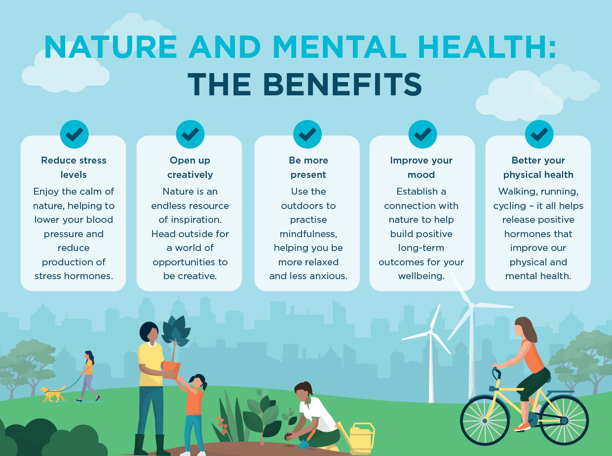

By, Naser Al sabah

Welcome to Mental Health with Nature. We are here to help you discover peaceful places in Wellington where you can walk and relax while caring for your wellbeing.
Come explore our map of fun, relaxing nature spots, or read more about how we created this website on our About Us page.
We hope this website will be a stepping stone for your mental health journey.
Many people find it hard to find the time to connect with nature, even with all the benefits to your mental health. We want to make the choice easier for you. So we have carefully curated a couple of recommendations for places to visit.